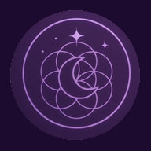

Luz GuíaRegistros Akáshicos con Mey
La memoria de tu alma, puesta en palabras para vos.
Cómo es una lectura ✦ Deslizá para descubrirlo ↓El origen
¿Qué son los Registros Akáshicos?
"Akasha" es una palabra en sánscrito que significa éter: aquello que todo lo contiene.
Según esta tradición espiritual, los Registros Akáshicos son la memoria energética de tu alma: un gran libro donde queda guardado todo lo que viviste, lo que sentís hoy y las posibilidades que se abren delante tuyo. Abrirlos es como consultar esa biblioteca con amor y respeto, para traer claridad a tu camino.
La forma de Mey
Una lectura distinta a todas
Hay muchas maneras de leer los Registros. Mey trabaja de una forma muy especial: tus preguntas son solo tuyas.
Mey nunca lee tus preguntas.
Y aun así, llega con tus respuestas.
- 1
Escribís tus preguntas, en privado
Todas las que quieras, sobre tu pasado, tu presente o tu futuro. Mey te comparte una guía de preguntas que podés usar, y sumás las tuyas.
- 2
No se las mandás a nadie
Las guardás vos. Mey no las ve en ningún momento: ni antes, ni durante, ni después.
- 3
Mey abre tus Registros
Quince minutos antes de la sesión abre tus Registros con tus datos y recibe la información: las respuestas a esas preguntas que nunca leyó. Las escribe en un texto para vos.
- 4
Se encuentran por videollamada
Una hora por videollamada de WhatsApp, desde donde estés. Mey te comparte lo que recibió y podés sumar todas las preguntas nuevas que te surjan.
⏳ 1 hora📱 WhatsApp🌎 Desde cualquier lugar - 5
Te quedás con todo
Podés grabar la sesión completa y Mey te envía el texto escrito con tus respuestas, para volver a leerlo cuando lo necesites.
Para inspirarte
Preguntas que suelen hacerse
Algunas de las preguntas guía más usadas. Elegí las que resuenen con vos y agregá las tuyas.
- ¿Cuál es el propósito de mi alma en esta vida?
- ¿Qué dones traigo y cómo puedo desarrollarlos?
- ¿Qué patrón se repite en mis vínculos y qué vino a enseñarme?
- ¿Qué me está frenando para avanzar en mi trabajo o con el dinero?
- ¿Qué necesito sanar o soltar en este momento?
- ¿Qué necesito saber sobre la decisión que estoy por tomar?
💡 Las preguntas abiertas ("¿qué…?", "¿cómo…?", "¿para qué…?") abren respuestas más ricas que las de sí o no. Escribilas con calma y desde el corazón.
Para prepararte
- Escribí tus preguntas unos días antes, a mano o en el celular.
- Buscá un lugar tranquilo donde nadie te interrumpa.
- Tené cerca agua, auriculares y un cuaderno.
- Revisá tu conexión y la batería del celular.
- Unos minutos antes, respirá hondo y conectá con tu intención.
Lo que te llevás
- Las respuestas a tus preguntas, por escrito.
- La grabación completa de la sesión, si querés hacerla.
- La posibilidad de preguntar en vivo todo lo que te surja.
- Más claridad y paz para tus próximos pasos.
Dudas frecuentes
Lo que más nos preguntan
¿Tengo que mandarle mis preguntas a Mey?
No, nunca. Las escribís y las guardás vos. Esa es la magia de esta forma de trabajar.
¿Es presencial?
No, es por videollamada de WhatsApp, así que podés hacerla desde cualquier ciudad.
¿Cuánto dura?
Alrededor de una hora.
¿Puedo grabar la sesión?
Sí, Mey te deja grabarla completa para que la escuches las veces que quieras.
¿Y si en el momento me surge otra pregunta?
Podés hacerla durante la sesión, sin problema.
¿Qué datos necesita Mey?
Cuando reservás tu lectura, Mey te dice qué datos tuyos necesita para abrir tus Registros.
¿Necesito saber algo de espiritualidad?
Nada. Solo venir con el corazón abierto y tus preguntas.
Tu lectura te espera
¿Querés abrir tus Registros?
Escribinos y coordinamos el día y el horario de tu lectura con Mey.
Con luz, Mey
Las lecturas de Registros Akáshicos son una práctica espiritual de autoconocimiento. No reemplazan la atención médica, psicológica ni legal.